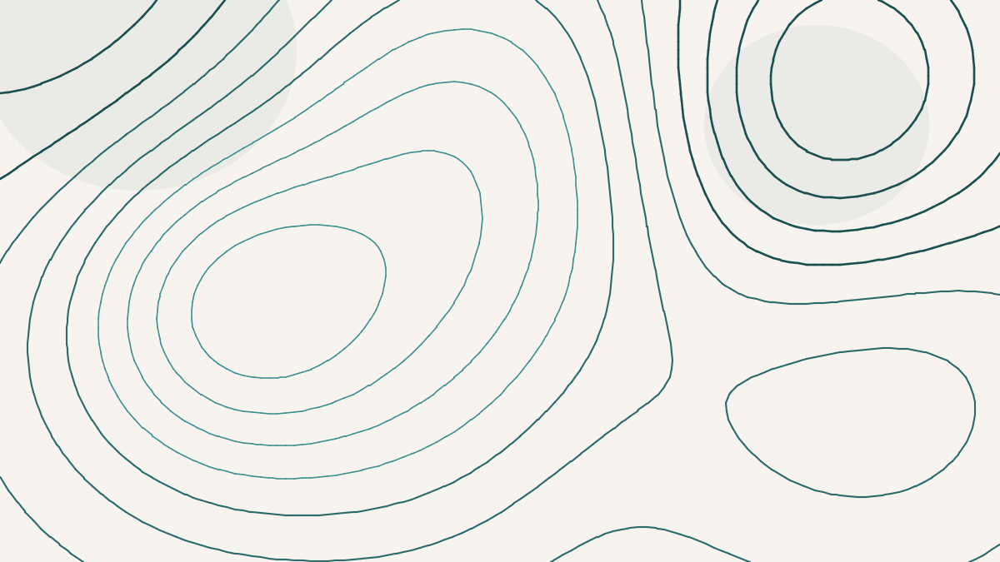

How Many Numbers Does It Take to Store the Shape of Gravity?
Sea level is not level. If you drained the oceans and let gravity alone decide where the surface of a still, worldwide sea would sit, you would get a lumpy, dimpled shape — rising tens of metres over the North Atlantic, dropping about a hundred below in the Indian Ocean south of the peninsula — that bears no resemblance to a smooth sphere. This shape is the geoid, and it is the honest answer to "what is the shape of the Earth." I got interested in it, working with a student, not for its shape but for a more mundane-sounding question: how many numbers does it take to write it down? The answer turned out to be a small lesson in where a planet keeps its secrets.
To store a field that lives on a sphere — gravity, the magnetic field, temperature, anything — you almost always reach for spherical harmonics. The idea is the same one behind a Fourier series, wrapped onto a globe. Any such field can be written as a sum of standard wavy patterns organised by a whole number called the degree: degree zero is a constant, degree one is a single big lobe, degree two splits the globe into quarters, and so on, with each higher degree carrying finer and finer detail. A field is then just its list of coefficients — how much of each pattern to add in. Keep every degree and you have the field exactly. Keep only the degrees up to some cutoff and throw the rest away, and you have a compressed version: smooth where you kept detail, blurred where you didn't. Truncating a spherical-harmonic model is lossy compression, the spherical cousin of turning down the quality slider on a JPEG.
So the question "how many numbers" becomes precise. Pick a tolerance — say you will accept a reconstruction that is within one per cent of the true field — and ask what cutoff degree you need. Because the harmonics are orthogonal, the error has an exact closed form: the fraction of the field's total power that lives in the degrees you discarded. No sampling, no noise, no Monte Carlo — you can compute the exact error at every cutoff and read off where it crosses your tolerance. That is what we did, for the Earth's gravity field and its magnetic field side by side.
How fast the error falls as you keep more detail is the whole story of compressibility. The magnetic core field plunges to one per cent after only a few dozen coefficients; the geoid drifts down so gently that it needs tens of thousands to reach the same accuracy. Same tolerance, same method — a thousandfold difference in cost.
The gap is startling. The magnetic field — specifically the main field, the part generated deep in Earth's molten core — reaches one per cent accuracy at degree six, which is forty-nine numbers. Forty-nine. The geoid, at the same one per cent, needs degree one hundred and ninety-one: about thirty-seven thousand coefficients. To store gravity as faithfully as you store magnetism costs seven hundred and sixty times as much. If you had guessed in advance which of Earth's great fields was the "simpler" one, the magnetic field — invisible, exotic, the thing that flips every few hundred thousand years — would not have been the obvious pick. But it is overwhelmingly the more compressible, because almost all of its strength is in a single dominant pattern, the dipole, the bar-magnet shape that makes a compass work. Ninety-four per cent of its power sits in the very lowest degree. There is almost nothing at fine scales to store.
Here is where it would be easy to write down a tidy rule — magnetism compresses, gravity doesn't — and here is where the data refuses to let you. There is a third field on Earth: the crustal magnetic field, the faint magnetism frozen into rocks near the surface, separate from the deep core field. When we ran it through the same machine, it decayed more slowly than the geoid. It was the least compressible of the three. So the clean story collapses: it is not gravity versus magnetism at all. Two magnetic fields sit at opposite ends of the ranking. Whatever governs compressibility, it is not which force you are looking at.
What governs it is depth. Trace each field back to where it is made. The core field comes from the fluid outer core, thousands of kilometres down, and a source that deep can only imprint broad, smooth, planet-scale patterns on the surface — the fine detail is smeared out by the sheer distance, so its power piles up at the lowest degrees and it compresses to almost nothing. The geoid comes from density variations spread all through the crust and mantle, at every depth, so it carries power across a wide band of scales and lands in the middle. The crustal magnetic field comes from shallow, patchy magnetisation just under our feet, and shallow sources write sharp, local, high-frequency detail — its spectrum is nearly flat, power at every scale, nothing to throw away. The order is monotonic in depth: the deeper the source, the smoother and longer-wavelength the field, the fewer numbers it takes to store. Compressibility is, quietly, a form of depth-sounding. You can even see it in the reverse: take the core field and mathematically continue it downward toward the core, and as you approach its source it whitens — its steep, compact spectrum flattens out, its compressibility draining away exactly as you close in on where it is born.
There is a coda worth adding, because "how many numbers" has a second meaning. One is how many coefficients — and there the news is that spherical harmonics are essentially the right basis: an oracle that could keep whichever coefficients it liked, in any cleverer arrangement, beats plain degree truncation on the geoid by three-tenths of one per cent. There is no smarter global basis waiting to be found; the geoid is expensive because it genuinely has structure at every scale, and you cannot compress what is really there. The other meaning is how many bits per coefficient — and there the naive choice of a 32-bit float wastes about a factor of eleven over the theoretical floor, a gap a smarter encoder closes to a few tens of per cent. But that is an engineering matter of coding, separable from the field itself. The deep fact is the first one: the number of coefficients is set by the physics, and the physics is set by the depth.
An honest caveat that should go before any stronger claim
The exact numbers depend on some defensible choices. "The full field" has to be defined by some maximum degree — 360 for the geoid, 13 for the core field — and a different reference would slide the absolute thresholds, though not the ordering that carries the argument. The geoid's one-per-cent degree is mildly sensitive to how the large-scale flattening term is handled: the standard ellipsoid-referenced convention puts it near degree 191, and dropping the degree-two term entirely pushes it to about 219. The crustal model is itself a truncation of a larger one, so its slope is the honest summary rather than its threshold. And the coefficient count is a clean upper bound on storage, not the last word — a real codec does better, as the bit-level analysis shows. What survives all of that is the comparison, because every field went through the identical, exact, area-weighted procedure: gravity is far less compressible than the core field, the crustal field is less compressible still, and the ranking tracks the depth of the source. The specific degrees are conventions. The ordering is physics.